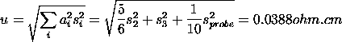

2.
Measurement Process Characterization
2.6.
Case studies
2.6.3.
Evaluation of type A uncertainty
2.6.3.2.
|
Analysis and interpretation
|
|
|
Purpose of this page
|
The purpose of this page is to outline an analysis of data taken
during a gauge study to quantify the type A uncertainty component for
resistivity (ohm.cm) measurements on silicon wafers made with a gauge
that was part of the initial study.
|
|
Summary of standard deviations at three levels
|
The level-1,
level-2, and
level-3 standard deviations
for the uncertainty analysis are summarized in the table below from the
gauge case study.
Standard deviations for probe #2362
Level Symbol Estimate DF
Level-1 s1 0.0729 300
Level-2 s2 0.0362 50
Level-3 s3 0.0197 5
|
|
Calculation of individual components for days and runs
|
The standard deviation that estimates the
day effect is
The standard deviation that estimates the
run effect is
|
|
Calculation of the standard deviation of the certified value
showing sensitivity coefficients
|
The certified value for each wafer is the average of N = 6
repeatability measurements at the center of the wafer on M = 1
days and over P = 1 runs. Notice that N, M and
P are not necessarily the same as the number of measurements in
the gauge study per wafer; namely, J, K and L.
The standard deviation of a certified value (for time-dependent sources
of error), is
Standard deviations for days and runs are included in this calculation,
even though there were no replications over days or runs for the
certification measurements. These factors contribute to the overall
uncertainty of the measurement process even though they are not sampled
for the particular measurements of interest.
|
|
The equation must be rewritten to calculate degrees of freedom
|
Degrees of freedom cannot be calculated from the equation above because
the calculations for the individual components involve differences among
variances. The table of
sensitivity coefficients for a 3-level design shows that for
the equation above can be rewritten in the form
Then the degrees of freedom can be approximated using the
Welch-Satterthwaite method.
|
|
Probe bias - Graphs of probe biases
|
A graphical analysis shows the relative biases
among the 5 probes. For each wafer, differences from the wafer average
by probe are plotted versus wafer number. The graphs verify that
probe #2362 (coded as 5) is biased low relative to the other probes. The
bias shows up more strongly after the probes have been in use (run 2).
|
|
How to deal with bias due to the probe
|
Probe #2362 was chosen for the certification process because of its
superior precision, but its bias relative to the other probes creates
a problem. There are two possibilities for handling this problem:
- Correct all measurements made with probe #2362 to the average of
the probes.
- Include the standard deviation for the difference among probes in
the uncertainty budget.
The best strategy, as followed in the certification process, is to
correct all measurements for the average bias of probe #2362 and take
the standard deviation of the correction as a type A component of
uncertainty.
|
|
Correction for bias or probe #2362 and uncertainty
|
Biases by probe and wafer are shown in the
gauge case study. Biases for
probe #2362 are summarized in table below for the two runs. The
correction is taken to be the negative of the average bias. The
standard deviation of the correction is the standard deviation of
the average of the ten biases.
Estimated biases for probe #2362
Wafer Probe Run 1 Run 2 All
138 2362 -0.0372 -0.0507
139 2362 -0.0094 -0.0657
140 2362 -0.0261 -0.0398
141 2362 -0.0252 -0.0534
142 2362 -0.0383 -0.0469
Average -0.0272 -0.0513 -0.0393
Standard deviation 0.0162
(10 values)
|
|
Configurations Database and
plot of differences
|
Measurements on the check wafers were made with
the probe wired in two different configurations (A, B). A plot of
differences between configuration A and configuration B shows no bias
between the two configurations.
|
|
Test for difference between configurations
|
This finding is consistent over runs 1 and 2
and is confirmed by the
t-statistics in the
table below where the average differences and standard deviations are
computed from 6 days of measurements on 5 wafers. A t-statistic < 2
indicates no significant difference. The conclusion is that there is
no bias due to wiring configuration and no contribution to uncertainty
from this source.
Differences between configurations
Status Average Std dev DF t
Pre -0.00858 0.0242 29 1.9
Post -0.0110 0.0354 29 1.7
|
|
Error budget showing sensitivity coefficients, standard deviations
and degrees of freedom
|
The error budget
showing sensitivity coefficients for computing the standard
uncertainty and degrees of freedom is outlined below.
Error budget for resistivity (ohm.cm)
|
Source
|
Type
|
Sensitivity
|
Standard
Deviation
|
DF
|
|
|
Repeatability
|
A
|
a1 = 0
|
0.0729
|
300
|
|
Reproducibility
|
A
|
a2 =

|
0.0362
|
50
|
|
Run-to-run
|
A
|
a3 = 1
|
0.0197
|
5
|
|
Probe #2362
|
A
|
a4 =

|
0.0162
|
5
|
Wiring
Configuration A
|
A
|
a5 = 1
|
0
|
--
|
|
|
Standard uncertainty includes components for
repeatability, days, runs and probe
|
The standard uncertainty is computed from the
error budget as

|
|
Approximate degrees of freedom and expanded uncertainty
|
The degrees of freedom associated with u are
approximated by the Welch-Satterthwaite formula as:
where the  i
are the degrees of freedom given in the rightmost column of the
table. i
are the degrees of freedom given in the rightmost column of the
table.
The critical value at the 0.05 significance level with 42 degrees of
freedom, from the t-table,
is 2.018 so the expanded uncertainty is
U = 2.018 u = 0.078 ohm.cm
|

![nu = u**4/{SUM[i=1 to 5][a(i)**4*s(i)**4/nu(i)]} = 42](mpc63f.gif)